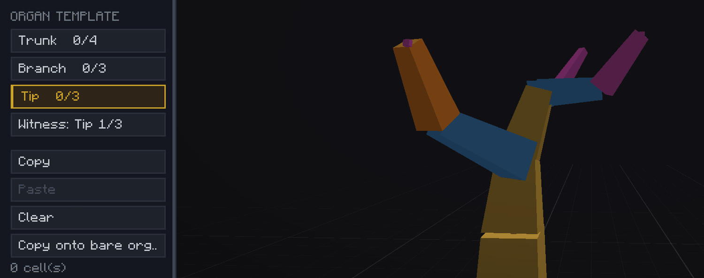
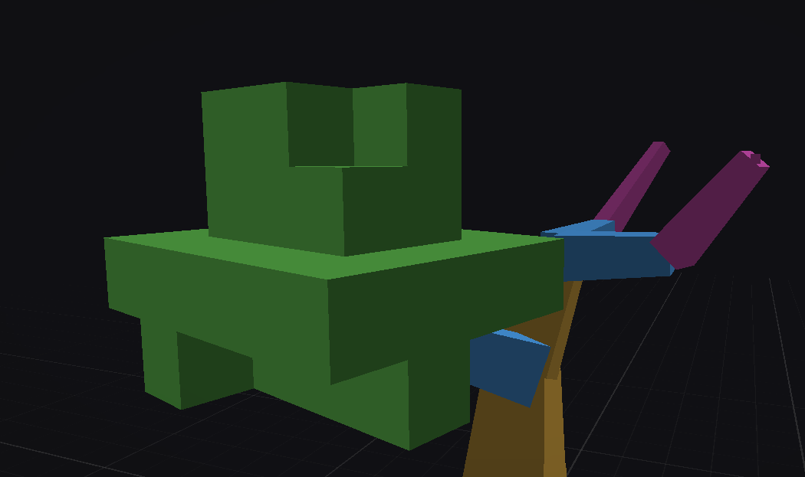
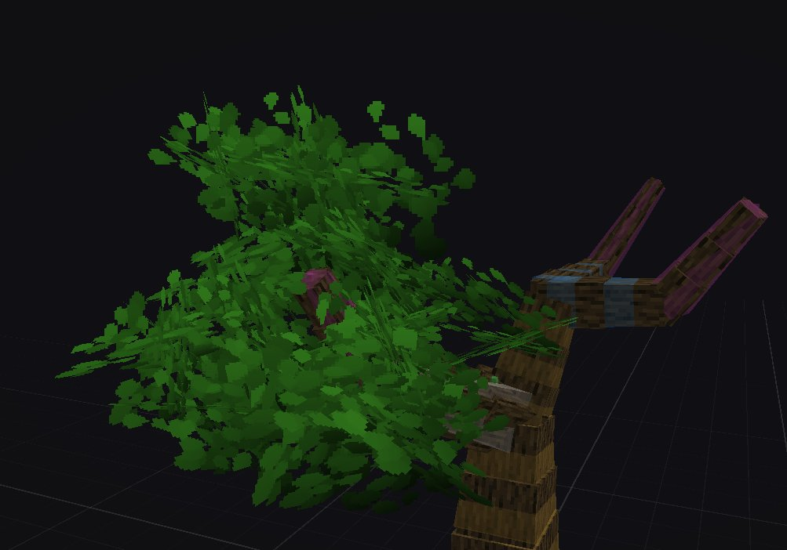
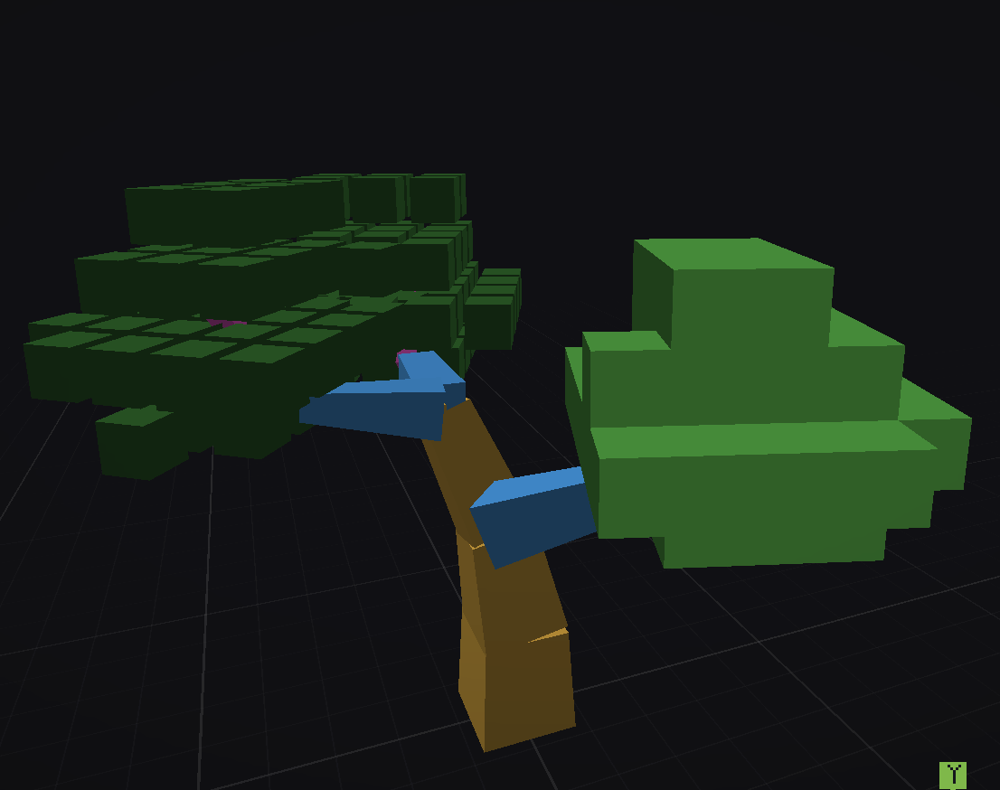
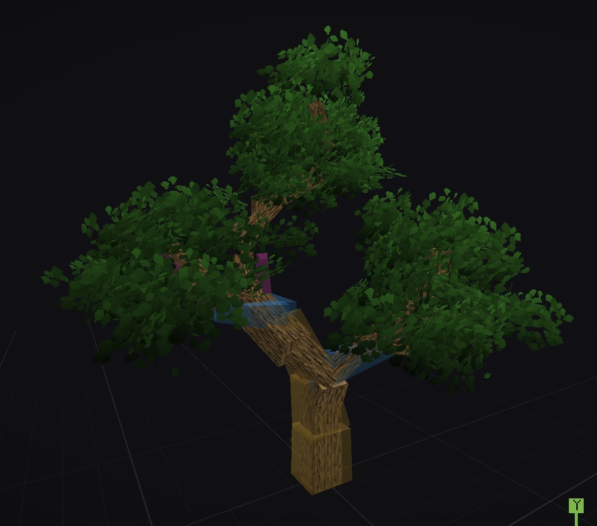

Tactile:Wood · The species workshop
Placing leaves organ by organ, and what the procedural side makes of it on the world's trees.
The Foliage button in the left rail opens foliage mode. It only becomes available once your tree has something more than a stump, since what you dress are organs.
When you dress your tree, keep in mind that dressing happens organ by organ: you dress this branch, and this very segment. If you do not, the procedural side will not know what goes where and will put tufts everywhere.
Pick the organ type, then step through the organs of that type (tip 1/3). The selected organ is highlighted in orange. The count next to each type tells you how many organs of that type already carry something.
On a small tree, start with a tip.

Left click to place, right click to remove, Ctrl + Z to undo. Cells already taken by a segment will not be filled with foliage, keep that in mind.
Only fill the selected organ. And avoid floating leaves: once copied onto another branch, a cell that touches neither wood nor another leaf is removed in game.

Switch to Solid view to see the result. If you like it, carry on; if a hole on top bothers you, it takes two clicks to fill.

Rather than repeating the same work on every organ, most of the time you simply want the same pattern again. Two ways:

The right panel changes to make room for the foliage settings: density, the look of the tufts with their size, orientation and variations, and the biome tint. The Fruit tabs will serve you when you add flowers or fruit, which the next module covers.
What you placed is put back as is on the tree in game, in the same spot and the same direction. It is your drawing: it is neither rotated nor thinned out.
The procedural side, for its part, adds branches of its own, and dresses them by copying yours. For each added branch it looks for the reading of the same type closest in height, and if it finds none of that type it borrows from another: a tip falls back to a branch, then to the trunk. That is why dressing three tips is enough to fill out the whole crown, every added branch leaving with a copy of your tuft.
Each copy is turned towards the direction of the branch that receives it. A tuft drawn on a branch pointing north will follow a branch pointing west, with nothing to redraw.
The trunk is the only part that can stay bare. If no reading falls close enough to the height being asked for, that level carries nothing: this is what gives you the bare lower trunk and the hollows in the crown. Branches and tips have no such guard, they always receive something.
Finally, a cell stays one leaf whatever the size of the tree. A large tree does not carry bigger leaves, it carries more dressed organs.

The help channel is there for that, and other people's creations are often the best answer.
Join the Discord